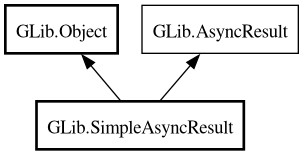

SimpleAsyncResult
Object Hierarchy:

Description:
[
CCode ( type_id =
"g_simple_async_result_get_type ()" ) ]
public class SimpleAsyncResult :
Object,
AsyncResult
Content:
Static methods:
Creation methods:
Methods:
Inherited Members:
All known members inherited from class GLib.Object
All known members inherited from interface GLib.AsyncResult